Operations
Pre-requisites
The following actions are required for robot programming in Right Angle and should be completed before starting the robot bending operation:
-
License: In Right Angle, ensure that the Robot Interface license is activated. Only if this license is activated, robot programming and operation can be performed in Right Angle.
-
To verify the license in Right Angle, navigate to Settings → Other Settings → Machine Settings → Change access level to Service and enter the service password → Go to Maintenance → License → Verify whether the Robot Interface license is activated.
-
-
Enable Robot Interface: In Right Angle, ensure that the Robot Interface is enabled.
-
Navigate to Settings → Other Settings → Machine Settings → Change access level to Service and enter the service password → Go to PLC options → Verify that the Robot Interface is turned ON.
-
Homing
-
Open RA → This "PLC reports emergency stop" message appears on the HMI.
-
Release E-Stop and press up pedal → Pump starts and "Press start to complete the homing process" message appears on HMI.
-
Press start (green illuminated button) to start homing process. Once pressed, backgauge homing will begin.
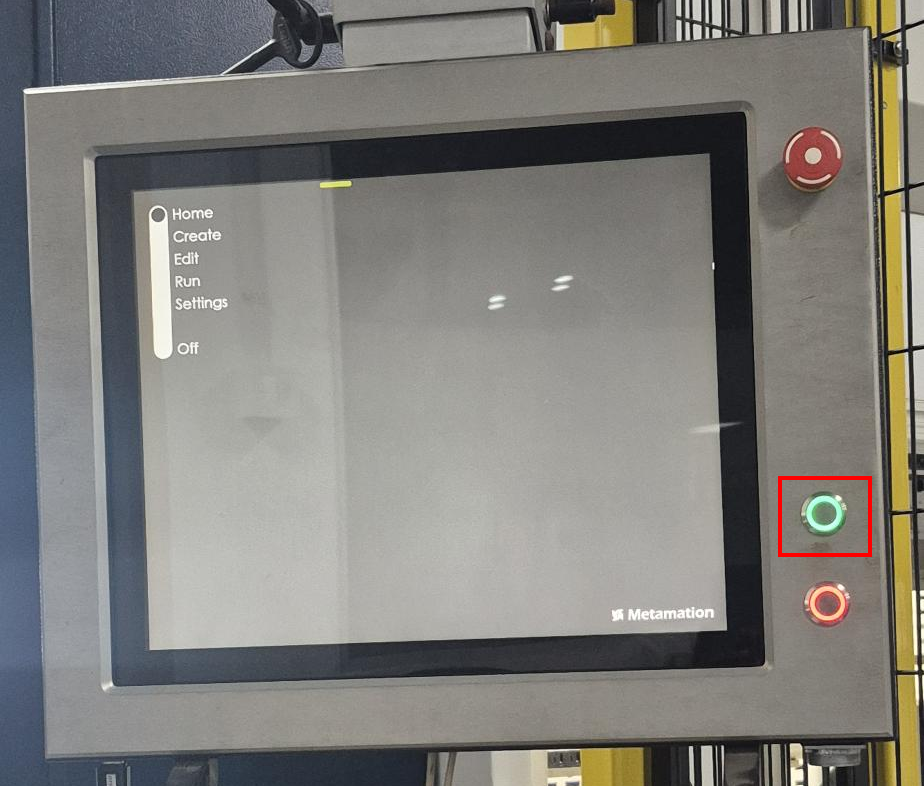
-
After Backgauge is homed, "Press downpedal for homing" message appears. Acknowledge it by pressing down pedal to move the RAM down. Continuously press the down pedal until you see "Press start to complete homing process" message.
Pressing down foot pedal for homing of RAM is required only when Right Angle indicates or else this is not required. 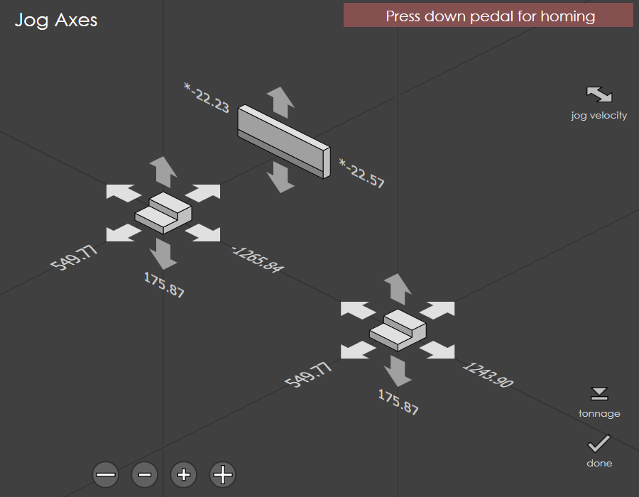
-
When the start button is pressed, RAM will be homed.
-
After homing is complete, the '*' symbols will disappear for all axes.
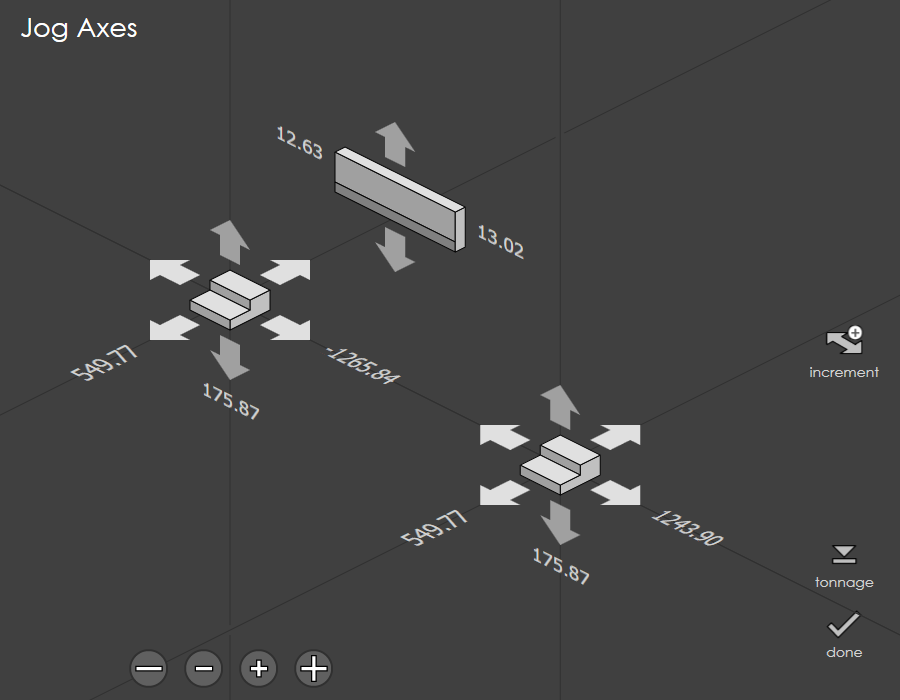
| If homing process is not done initially, then the Right Angle will display a warning message as "Machine not referenced" in the Run page. In this case, the homing process should be performed before running the program. |

Program Loading in Teach Pendant
Refer the File transfer using FileZilla transferring the .LS file from the PC to the Teach Pendant using FileZilla.
| Ensure that the appropriate .LS program files are loaded in the Teach Pendant before starting the operation. |
Robot Mode enable
Turn the Robot Key ON in the bend machine to enable robot mode. The following message will appear on the HMI: "Robot Mode Key is Active".
The "Special mode disparity" message will appear on the Right Angle. This message is just a warning to make the user aware that the machine is in Robot Mode and the safety parameters set in machine’s manual mode will not work in Robot Mode. Click on the message to clear it.
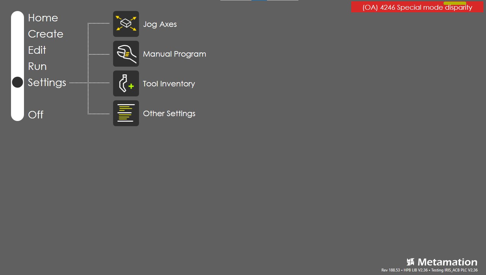
Program Loading in Right Angle
-
Go to edit page and click on the folder where you want to import the program. Then click on Transfer → Import → open the folder where the .fx file is located → select the .fx file → click Done.
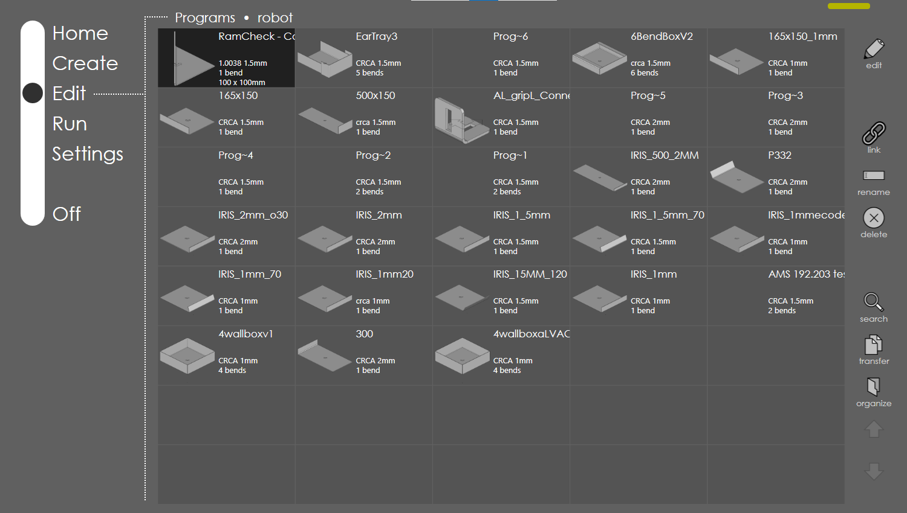
-
Go to edit page and open the imported .fx file, Click Edit. It takes you to the simulation page. Make sure that there are no errors in the simulation tab. If any errors are present, resolve the errors.
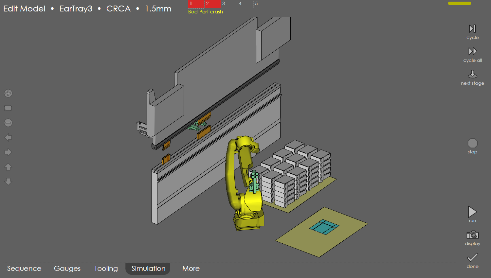
-
Go to Tooling tab and ensure that the correct tool, tool length, tool position and part position is set as same as in Flux.
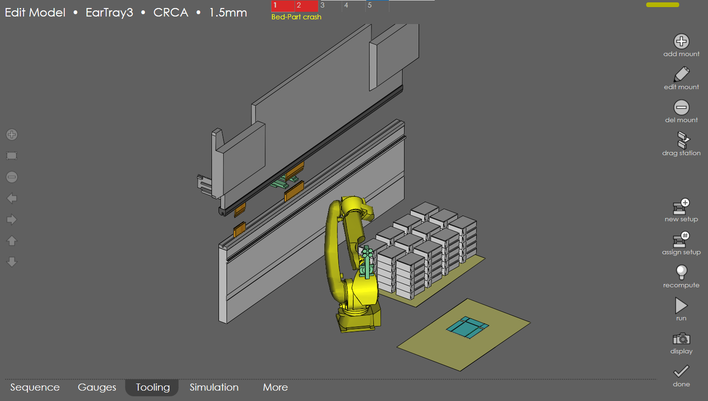
-
Go to the Gauges tab and verify the Gauge surface for each bend is same as in Flux.
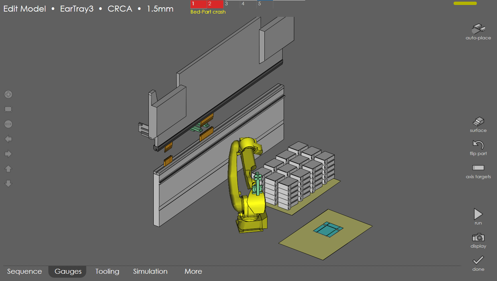
-
Once verified, click Run. The Run program page with numeric table will be shown.
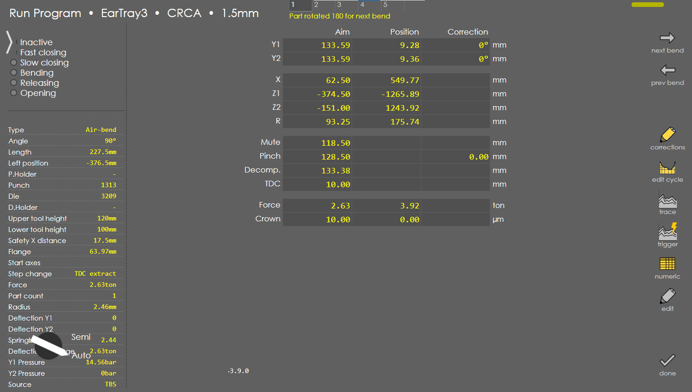
Ensure that you have selected the first bend in the numeric table before starting the program. -
If required, go to edit cycle and make the necessary changes in the cycle like RAM speed.
Pre-Operation Checks
Ensure the following before starting the bending operation:
-
The robot working area is clear of any obstacles.
-
The gripper is properly mounted to the robot.
-
The sheet metal on the pickup pallet is placed in the correct position.
-
The fence is closed.
-
The correct tool is mounted in the machine.
-
The punch and die tool is properly clamped.
-
For instance, if the punch is not clamped, this message appears "Punch not clamped". In this case, RAM will not move. So, clamp the punch by clicking "Clamp Punch" in RA’s Run program page, then press up pedal to clamp.
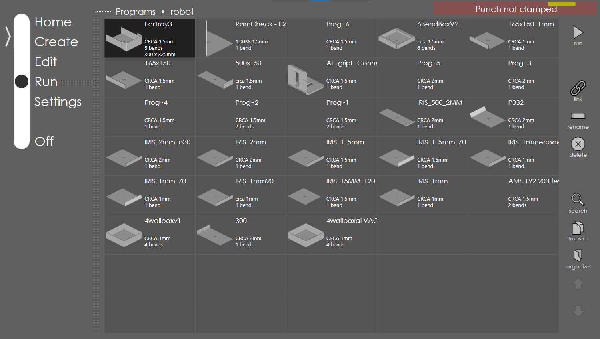
-
| The above sections are common for both Auto Mode and Teach Mode. Make sure to perform these procedures before starting the operation in either mode. |
Procedure to perform robotic bending in Manual Run (Robot in Teach Mode)
-
Set the robot to T2 Mode and activate Step Mode in the Teach Pendant (TP). The message "Robot in Manual test mode T1/T2 mode" appears.
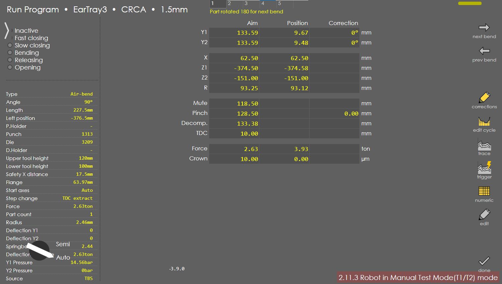
-
Enable the Deadman switch and reset TP. The message "Robot Auto Mode Active" appears in RA.
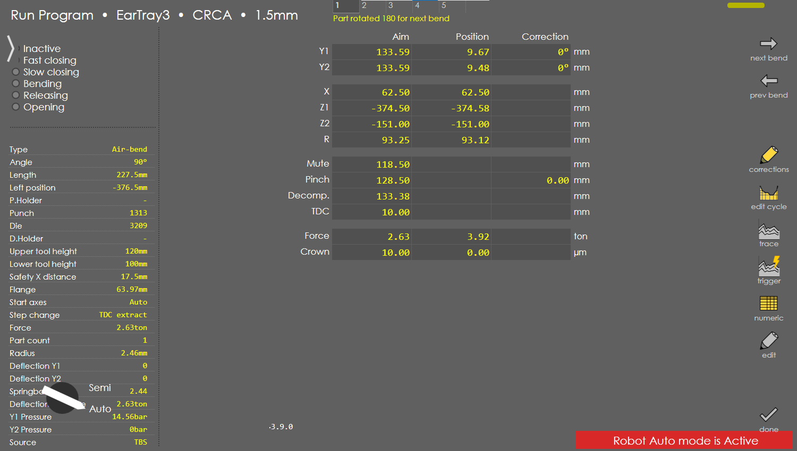
-
To acknowledge the message, press the up foot pedal. Once acknowledged, the "Program not started in robot" message appears on the HMI.

-
Select the main .LS program in the TP and press shift + forward command to start the program.
| Shift + forward command has to be given throughout the program execution to keep the robot moving. If shift is released, the robot will stop and wait for the next command. So press Shift + forward command to continue the robot movement. |
|
If deadman is released, the robot will stop and the "Robot Auto Mode is deactivated" message will appear on the HMI. Enable the Deadman switch and reset TP. To acknowledge the message, press the up foot pedal. Then give shift + forward command to continue the robot movement. 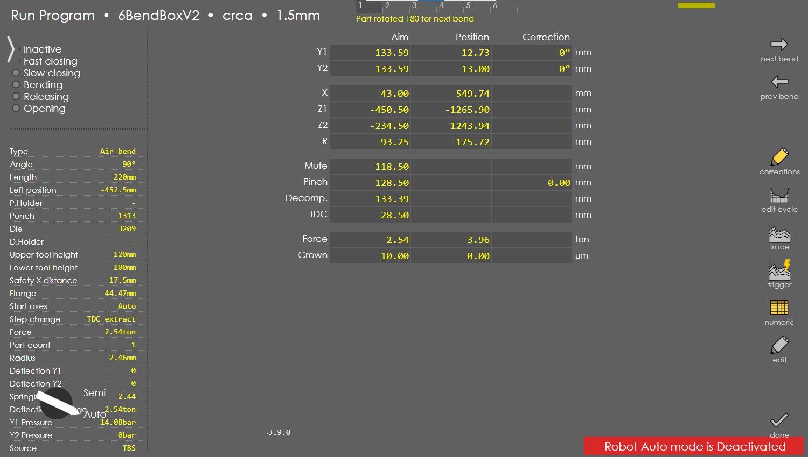 |
| During Bending operation, the robot should not be in step mode. So, once the robot reaches the Mute point, turn off the step mode to allow the robot to move continuously until the bend is completed, as the robot movement is synchronized with the bending operation.. After the bend is completed, step mode can be turned on again for the next steps. This is applicable for each bend in the program. |
Teach mode bending operation
-
Once the program is started, the robot approaches the pickup pallet, when sheet is detected, the robot picks the sheet and moves to the aloft position
The robot stays idle at the aloft position until the backgauges get positioned for the bend. -
The backgauges are positioned for the 1st bend and the robot moves to part insert waypoint and moves further to the mute waypoint and places the part on the die.
-
After the robot reaches the mute waypoint, turn off step mode to allow the robot to move in a continuous motion for syncronized robotic bending.
-
The sheet alignment process starts and the "Waiting for RAM below Mute point, Press down pedal" message appears on the HMI. Press the down foot pedal for RAM movement.
-
| The "No movement detected due to proportional valves" message appears as the RAM is not allowed to move down further before the sheet gets aligned. |
| Until the sheet gets alligned, The RAM will wait at the mute point and the down foot pedal has to be continuously pressed to move the RAM down. |
-
Once the RAM reaches the mute point, the message changes to "Waiting for RAM below Pinch point, Press down pedal". Only after the sheet gets aligned against bckgauges, the RAM is allowed to move down further to the pinch point.
-
Once the RAM reaches the pinch point, the synchronized bending operation starts. Until the bend is completed, The down foot pedal needs to be continuously pressed.
-
After the synchronized bending is completed, turn ON step mode again.
-
Continue to execute the program in Step mode. The RAM moves to UDP and robot moves to post bend safe waypoint.
-
If there are more bends, the robot moves to the next bend’s part insert waypoint and the same procedure is followed for each bend.
-
Once all the bends are completed, the robot transitions to the Deposit, places the part down, and returns to the Home Position, with each step executed manually via the Teach Pendant.
How to stop the robot in case of emergency
-
Release the Deadman switch or hold it firmly to immediately stop the robot in case of emergency. The "Robot Auto Mode is deactivated" message will appear on the HMI. Hold deadman and fault reset to clear the error in TP and press the up foot pedal to reset the message. Then give shift + forward command to continue the robot movement.
-
Press E-Stop in either Teach pendant/ Robot controller to stop the robot. Release the E-Stop, and then hold dead-man and reset to clear the error in TP and press up foot pedal. Then give shift + forward command to continue the robot movement.
How to stop the machine in case of emergency
-
Press E-Stop on the foot pedal station or on the machine or on the HMI to stop the machine. Hold dead-man and fault reset to clear the error. Release the E-Stop and press up foot pedal. Then give shift + forward command to continue the robot movement.
How to abort the robot program
-
Press the Abort (red) illuminated button to abort the robot program. Hold deadman and fault reset to clear the error. Press up foot pedal. Then give shift + forward command to continue the robot movement.
-
In TP, go to function → Abort. This will also abort the robot program. Give shift
forward command to continue the robot movement.
| After the program is aborted, make sure to bring the machine to the home position and then the program can be restarted from the beginning. |
Procedure to perform robotic bending in Auto Mode
-
Set the robot to "Auto Mode" in Robot Controller and close the fence. If the fence is open, the "Fence Open" message will appear on the TP. Close the fence to clear the message.
-
If robot is set in Auto mode and teach pendant is OFF, then RA displays the "Robot interface Auto mode is active" message.
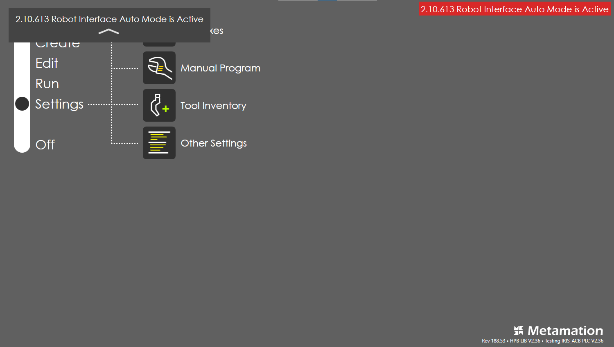
-
Turn ON teach pendant, Go to Select program → open PNS (inbuilt program) specifically for Auto mode. From PNS, go to Insert → Call → select the main program. Keep the overide speed as per requirement.
-
Turn OFF the TP and deselect the step mode.
|
In Auto mode, Teach pendant should be turned OFF when starting the program. If Teach pendant is ON, RA displays the "Robot interface Auto mode is Deactive" message. The program will not start until the Teach pendant is turned OFF. image: automode2.png[] |
-
Release E-Stop if it is pressed. Press up foot pedal until it displays "Program not started in robot" message.
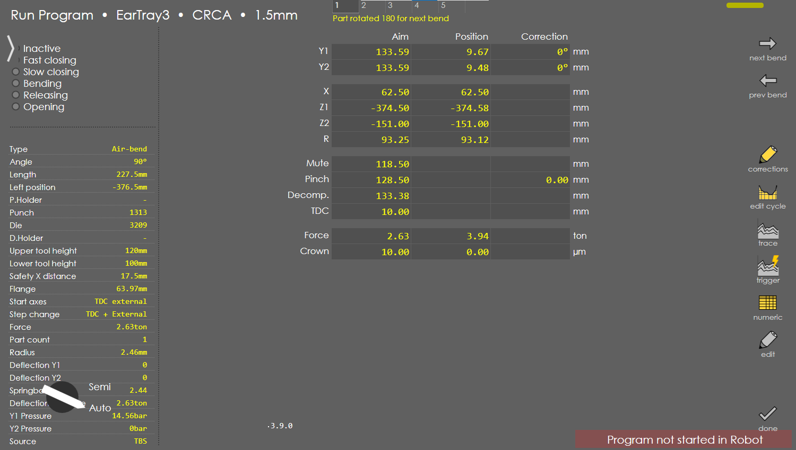
-
Press the green illuminated button to start the program in Auto mode.
| Ensure that the PNS program is selected in TP before pressing start button. If not, press up foot pedal to call the PNS program. |
Auto mode bending operation
-
Teach Pendant will be turned off during the bending operation in Auto mode.
-
Once the program is started, the same operation will be performed as in Teach mode. But in Auto mode, the robot will move continuously without waiting for any user confirmation for every operation except during bending operation.
-
During bending operation, every RAM movement has to be confirmed by pressing the down foot pedal as the machine requires acknowledgement till the bend is completed.
-
When RA displays the "Waiting for RAM below Mute point, Press down pedal" message, press the down foot pedal for RAM movement. Until the sheet gets aligned, The RAM will wait at the mute point and the down foot pedal has to be continuously pressed to move the RAM down.
-
Once the RAM reaches the mute point, the message changes to "Waiting for RAM below Pinch point, Press down pedal". Only after the sheet gets aligned against bckgauges, the RAM is allowed to move down further to the pinch point.
-
Once the RAM reaches the pinch point, the synchronized bending operation starts. Until the bend is completed, The down foot pedal needs to be continuously pressed.
-
After the synchronized bending is completed, the program continues to execute the next steps in the program.
-
How to stop the robot in case of emergency
-
To stop the robot in case of emergency, press E-Stop in either Teach pendant or Robot Controller. Release the E-Stop and press up foot pedal and press the green button to continue the robot movement.
-
To stop the machine and robot, press E-Stop on the foot pedal station. Release the E-Stop and press up foot pedal and press the green button to continue the robot movement.
How to abort the robot program
-
To abort the robot program, Press the Abort (red) illuminated button.
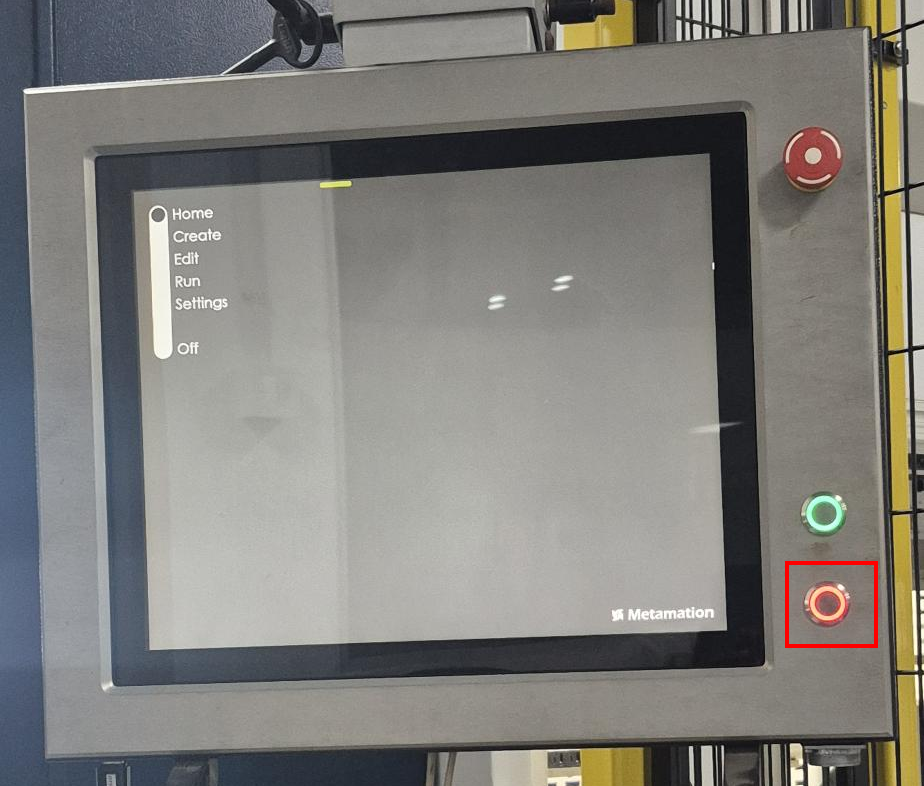
-
Once pressed, the "Cycle aborted by robot" message will appear. Press up foot pedal and press the green button to continue the robot movement.
|
After the program is aborted, do Auto homing to bring the machine to the home position. Then the program can be restarted from the beginning. Refer the robot HMI for how to do Auto homing. |